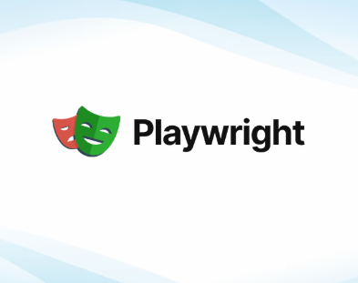
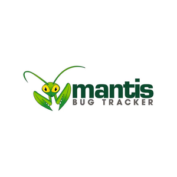
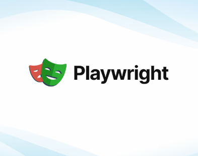
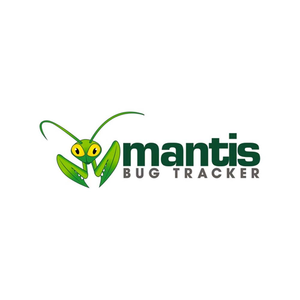
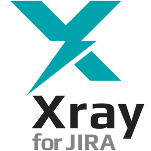
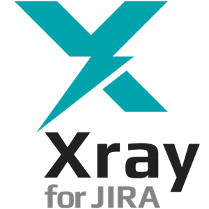

Hola! Soy Felix Cruz
Tester QA Manual-Automation
"Cualquier tecnología suficientemente avanzada es equivalente a la magia. La magia capaz de mejorar el mundo" - Arthur C. Clarke
Sobre mi
Soy un profesional apasionado por la tecnología y el desarrollo de software, con 41 años de edad y residente en Bogotá D.C., Colombia. Desde el inicio de mi carrera, me visualicé como desarrollador de aplicaciones web, pero fue en 2016 cuando encontré mi verdadera vocación como QA Tester. Comencé en una startup en un puesto de soporte a plataformas, donde apoyé al área de testing, lo que marcó el inicio de mi trayectoria en aseguramiento de calidad.En 2018, decidí orientar mis habilidades en desarrollo de software hacia la automatización de pruebas, especializándome en herramientas como Selenium WebDriver y Appium con Java, Playright y Postam. Además, cuento con la certificación ISTQB Foundation Level, que respalda mi conocimiento en estándares internacionales de pruebas, y tengo experiencia en el uso de Jenkins para la automatización y gestión de pipelines.
Mi objetivo profesional es continuar creciendo como un QA integral, fortaleciendo mis competencias en testing manual y automatizado, y seguir aportando a la calidad y eficiencia de los productos tecnológicos con los que trabajo.
Habilidades


 



 
